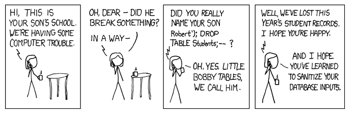
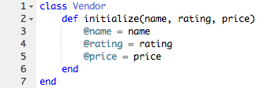
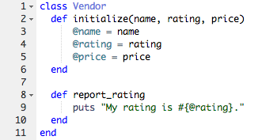
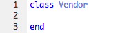
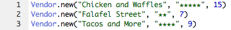

APIs
Posted Sunday July 6th, 2014
API stands for
Application
Programming
Interface. But what the heck does that mean? This post will scratch the mysterious surface of web APIs and why they are useful.
An application-programming interface (API) is a set of programming instructions and standards for accessing a Web-based software application or Web tool. A software company releases its API to the public so that other software developers can design products that are powered by its service. (
source)
OK enough with the formal definitions; what does this mean in the real world? Let's use Twitter as an example.
Twitter is a web
timesuck service that provides a lot of real-time information in the form of tweets. Twitter's database holds a wealth of information, including usernames, detailed information about users, follower counts, and tweet content. If you wish to build a brand new Twitter application, it would be non-trivial to
copy and
store all of this data — Twitter has
over 255 million monthly active users! I am sure you would prefer a way to access the data this service has already accumulated. Herein lies the power of a solid web API.
Twitter is one of the many web services that provides a
set of instructions to access their data. These instructions can be abstracted into
any programming language, from JavaScript to Perl. The fundamental set of instructions (regardless of language)
is the API. Your only job as a developer is to follow these instructions, or
leverage the API, within your code to properly access the data. Easy, right?
Take a look at the
Ruby interface to the Twitter API. It contains a library of instructions to compose a tweet, access a user profile, etc. This, and other APIs, provide extremely powerful ways to leverage the functionality of existing web services and the data they provide.
Testing Ruby Methods
Posted Tuesday July 1st, 2014
When writing tests in Ruby, we often check to see if a particular method is defined.
Therefore, it is important to
understand the subtle difference between
#method_defined? and
#respond_to?.
You're welcome.
SQL Injection
Posted Sunday June 29th, 2014

SQL injection is a code injection technique, used to attack data-driven applications, in which malicious SQL statements are inserted into an entry field for execution (e.g. to dump the database contents to the attacker). (
source)
What is it?
SQL injection is a common web hack, typically used to gain access to a backend database. It is made possible as a result of an improperly coded website that allows SQL statements to be inserted into input fields, querying the database itself.
SQL Injection vulnerabilities provide the means for a hacker to communicate directly to the database. (
source)
For example, a hacker could generate a SQL query to retrieve all usernames and passwords in a database. When this query is inserted into an input field, such as a login field in a web application, it can be executed and the hacker could gain access to what should be secure information.
How can we prevent it?
SQL injection can be prevented by properly
sanitizing data input. This means that the input is made invulnerable before being sent with the SQL query to the database. Before the query is sent to the database, it should be validated in some way. The
most popular response on StackOverflow for preventing an attack is the following:
Use prepared statements and parameterized queries. These are SQL statements that are sent to and parsed by the database server separately from any parameters.
For even more information on how to prevent SQL injection, check out
this cheat sheet.
Procs, Blocks, & Lambdas
Posted Sunday June 22nd, 2014
Since we have already covered
classes in Ruby and
skimmed the surface of Procs, it is time to discuss blocks, Procs, and lambdas in more depth. Get ready to engage.
Blocks
A Ruby block is just a bit of code that can be executed. (
source)
Blocks of code can be used in Ruby to perform actions on data. Often, you will see blocks passed to method calls in order to operate on the receiver of the message. For example, if I want to
print my name 10 times, I can pass instructions to
print my name as a
block to the Integer method
times like so:
10.times { puts "Whitney" }
The block of code between the curly braces gets executed 1, 2, 3, ... 10 times! Pretty self-explanatory. But what about passing data to the block? For this, let's use another example, that iterates through a list of sauces because...who doesn't like sauce?
["Sriracha", "Tapatio", "Soy"].each do |sauce|
puts "#{sauce} may be the best sauce I've ever had."
end
Forgive the indentation, but take a good look at this code. As we pass through the array, we funnel data — i.e.
sauce — to our block, printing out our saucy delight at each pass.
Because a block is not an object in Ruby, we need another way to
save blocks of code to a variable. This is where Procs come in.
Procs
You can think of a proc as a "saved" block: just like you can give a bit of code a name and turn it into a method, you can name a block and turn it into a proc. (
source)
A Proc is a Ruby class that can be used to create objects that are just like blocks. Why is this useful? Well, it allows us to save these block-like objects to named variables which means we can use them multiple times throughout our code. Let's use our previous example of printing my name because you know you want to.
say_my_name = Proc.new { puts "Whitney" }
10.times(&say_my_name)
As you can see, we created a new Proc object and gave it a block as an argument. Now we have a named block of instructions to pass around, and an easy way to make our code resemble a
Destiny's Child hit song:
say_my_name = Proc.new { puts "Whitney" }
10.times(&say_my_name)
5.times(&say_my_name)
(Note:
& is used to convert the proc object into a block before it is passed to a method that expects a block.)
Lambdas
[With] the exception of a bit of syntax and a few behavioral quirks, lambdas are identical to procs. (
source)
Essentially, lambdas and Procs are somewhat interchangeable. Rewriting our example code using lambdas would look like the following:
say_my_name = lambda { puts "Whitney" }
10.times(&say_my_name)
Did you try running the code above? Well, you should have because you will notice that it fails! The reason it fails is due to a distinct difference between Procs and lambdas.
[A] lambda will throw an error if you pass it the wrong number of arguments, whereas a proc will ignore unexpected arguments and assign nil to any that are missing. (
source)
Running the code above throws an error because when we call the
times method with a block of code, we are actually passing the current iteration (1-10) to that block. If we do not account for this argument in our lambda, it will raise an
ArgumentError (which would not happen if we used a Proc object). Our lambda should catch this argument and look more like the following:
say_my_name = lambda {|iteration| puts "Whitney"}
10.times(&say_my_name)
Ah, that's better. But there is one more distinct difference between a Proc object and a lambda that we have not yet discussed.
[When] a lambda returns, it passes control back to the calling method; when a proc returns, it does so immediately, without going back to the calling method. (
source)
Let's see this in action by quoting
Shaft and using the
call method with both Proc objects and lambdas.
def shaft_proc
bio = Proc.new {return "He's a bad mother–" }
bio.call
puts "Shut yo mouth!"
end
def shaft_lambda
bio = lambda {return "He's a bad mother–" }
bio.call
puts "Shut yo mouth!"
end
Try the code above and see if it prints what you expect. As you can see, when the Proc object returns, the rest of the method does not get executed (nearly leaving us with some obscene output). However, when the lambda returns, the method continues, politely telling us to shut our mouths. Neat.
Wanna learn more about Procs, blocks, and lambdas? Try
this post or go interactive with Codecademy's awesome
tutorial.
Happy learning :)
Ruby Fact
Posted Friday June 20th, 2014
The number 0 evaluates to true.
Classy Food Trucks (Part 2)
Posted Friday June 20th, 2014
Last week, we learned how to use
classes and
instance variables in Ruby by digging into the wonderful world of
food trucks. This time, we will be exploring the bits of code, or
instance methods, that manipulate these instance variables.
Let's begin by revisiting our Off The Grid food vendors:
We created a Ruby
class to model the vendors.

What if we want the vendors to actually
do something, like report their average rating? We need a way to send a
message to a vendor instance like "Hey! Tell us your average rating..." – to which the vendor would reply "My average rating is 4 stars." Good news, we can do this with
instance methods!
Instance methods perform bits of logic and/or operate on instance variables within a given class. Let's jump right into an example with code:

We have a new instance method
report_rating. What does this method do? Well, it does exactly what we just described...it prints a vendor's rating by accessing the instance variable
@rating. That's it. Nobody said instance methods have to be complicated (although they certainly can be).
Now, every time we call this method on a vendor instance, the vendor examines its own rating and prints it out!
To conclude, classes contain instance variables that represent an object's attributes (e.g. @rating) and instance methods that can perform operations on those attributes (e.g. the report_rating method outputs the rating). Classes can also contain
class variables and
class methods, but we will save these topics for another blog post.
Classy Food Trucks (Part 1)
Posted Sunday June 15th, 2014
Where there's food, there's a real world model for Ruby classes.
Off The Grid SF is an experience that brings street food vendors and the communities they serve together in the city of San Francisco. Vendors prepare and sell food from full-service trucks, delighting foodies and wanderers alike with everything from kabobs to burritos to organic ice cream.
Let's examine the Off The Grid experience and model it using Ruby
classes.
We will start by modeling a portion of Off the Grid, a collection of several different food trucks (there are actually
over 150 OTG food vendors):
What do you notice? Let's think about this. Though there are several different vendors, each with its own distinct
values for name, average rating, and average price...information for each vendor is stored and presented with the exact same
structure.
-
Truck name
-
Avg Rating
Avg Price
-
So how do we model this structure in code? We use a
class. Let's stick with our example and create class Vendor.

Remember, it doesn't matter if the vendor sells hot dogs or enchiladas, some basic properties are shared by every single vendor. Let's add these shared properties, or
instance variables, to our class.
Now we can easily create multiple vendors with a specific name, rating, and price. When a new food truck vendor joins Off the Grid, we can use our Vendor class to create a new object and specify its properties.
Simple. You see, a class is like a blueprint. Objects that share the same blueprint can be created from the same class. Let's look at the creation of more Vendor objects.

The properties that these objects have in common (prefixed with an
@ symbol, i.e. @name, @rating, and @price) are called
instance variables. Note, properties are common between objects – not the
values of those properties. Though the objects are created from the same class, instance variables store values specific to each object, e.g. Chicken and Waffles has a 5-star rating while Falafel Street has a 2-star rating.
Stay tuned for more Off the Grid madness. In Part 2 of this post, I will discuss how to use
instance methods to manipulate instance variables.
Ruby Fact
Posted Tuesday June 10th, 2014
Ruby keyword
next forces a jump to the next iteration of a loop.
The Ruby Pretzel
Posted Sunday June 8th, 2014
This week in JavaScript, I was introduced to this beast:
array_of_strings = array.map(&:to_s)
At first, heads exploded. What the heck is that pretzel colon thingy? To understand this gibberish requires a basic understanding of the JavaScript method
map.
map { |item| block } → new_ary
The builtin method map is an instance method for Ruby arrays and hashes. In this post, we will be referring to the method that operates on arrays.
An array object calls map, which says "hey, gimme a block of code and I will execute it on every element in this array." It iterates through each item in the array, executing the code in the block and storing the new value of the item in a brand new array (if we don't want to create a new array, but simply wish to modify the old one, we would use destructive method
map! with
! on the end).
So what about that cryptic code from earlier?
array_of_strings = array.map(&:to_s)
I'm glad you asked. This accomplishes the exact same thing. It is simply shorthand provided by Ruby (thank you, Ruby) to run a block of code on every single item in an array. To better understand what is happening, let's consider what is being passed into map...the operator
& and the symbol
:to_s.
The
&, or
unary ampersand operator, makes our code equivalent to the following:
array_of_strings = array.map(&:to_s.to_proc)
Here we have the method
to_proc being called on the symbol
:to_s. This method returns a Proc object, which (for the brevity of this post) is just a block of Ruby code that performs specific operations. For example, the code `:to_s.to_proc` shown above returns
a block of code that converts given input to a string. Our handy unary ampersand operator then says "great! now run this block of code on every item in the list." And it does.
Smells a lot like the regular map method, with a little syntactic sugar, huh? That's because it is. Please use and enjoy.
Refer to
this post for more information.
JavaScript
Posted Sunday June 1st, 2014
Why has JavaScript taken over the web? Here are a few things to consider.
- It has a simple syntax, making it a fairly easy language to learn
- No plugins are required to be installed
- JS is more lightweight than Flash and Java
- Several libraries that add useful features to the language are available
Aside from being popular, JavaScript is a really great language. With it, we can do a number of things...
- Make websites respond to user interaction
- Display pop up messages
- Organize and present data
- Extra browser functionality with addons
- ...even build apps and games!
While popular and awesome, JavaScript also has limitations. If you are looking to do the following with JavaScript, look elsewhere:
- Directly access files on a user's system
- Write directly to files on a server (without a little help)
- Access databases
- Close a window it did not open
- Access websites hosted on another domain
Now, go forth and learn it.
CSS Positioning
Posted Sunday May 25th, 2014
A hard thing to understand. Let's make it easy.
Here are three balloons stacked in a grey bin.
The balloons have default positions of
static.
These pretty balloons ain't moving.
CSS:
#green-balloon
{ position:static; }
Now let's make the position of the green balloon
absolute.
CSS:
#green-balloon
{ position:absolute; }
Wait a minute! What just happened? We "pulled" the green balloon out of the flow. We can literally position it
absolutely anywhere – even on top of or underneath other balloons in the bin.
This brings us to the
relative position. Guess which div on this page has been
relative the entire time we've been playing with balloons?
#grey-bin
{ position:relative; }
That's right, the grey bin! The bin that is holding our balloons must have a position of
relative or
absolute for any of this balloon floating nonsense to work. Why? Because this "limits the scope of absolutely positioned child elements" – in plain English, it forces our balloons to be contained within it. Otherwise, when we position our green balloon to be
absolute, it would go flying to its closest
non-static parent, which may be an unintended div in your webpage, or the page itself!
Fixed positioning is a bit easier to explain. Check out the sidebar on this page containing links to my profiles on the web. The position of this div is
fixed, meaning it is stuck there and will be staring back at you forever.
Go ahead, scroll. Yep...still there.
If you would like to know how elements interact when positioned, or prefer an explanation without balloons and bins, check out
this site.
Websites That I Dig
Posted Sunday May 18th, 2014

I am on SoundCloud 78% of all waking hours. 86% of open browser tabs are new SoundCloud music discoveries.
I even curate a
music blog of crazy good SoundCloud playlists.
But let's talk about design and UX.
I love the SoundCloud design. It could use moar orange.
But the layout (navigation) of the site is simple and I love simple UI.
I hate the SoundCloud user experience. Discovering music aint easy.
Each tab on the profile settings page annoyingly opens in a new window.
Logging out of a user account on one browser tab subsequently logs the user out of ALL OPEN TABS.
It makes me want to cry.
Does any of that make sense? No? OK, on to
Twitter.
Who doesn't love The Twitter?
The website is aesthetically appealing, easy to navigate, and is starting to look like Facebook...
which is great for
people who don't use Facebook.
The UX is great, by sheer design of the service.
You can only accomplish an average of 5 useful things when using Twitter, which makes for a dead simple user experience.
Also, infinite scroll, ftw. I still gotta figure out how that works. AJAX?
Quora. Because it is important to know
how life is similar to a game of chess.
Quora is for asking and answering questions, both trivial and life-changing.
There are subtle things about the design and user experience that make this obvious, e.g.
when the site is launched, the cursor is already neatly placed in the search box like
Google.
Cool.
Again, simplicity. I swear by it. And this site definitely has it.
The design eliminates the unnecessary and makes it really easy to perform basic functions
such as asking a question, upvoting an answer, following a user, etc.
A bit strange, but I am grossly intrigued by the fact that this site has almost no color
in its design.
This site will forever remain my homepage. And daily timesuck.